# 使用内置数据
data(mtcars)
# 最简单的散点图
plot(mtcars$wt, mtcars$mpg)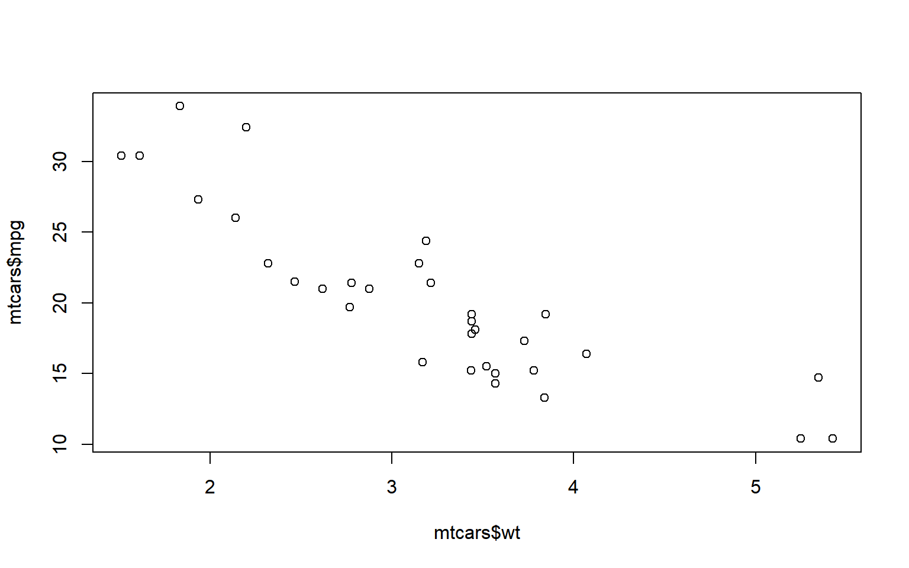
R 语言拥有三大绑图系统，其中 Base R 是最基础也是最灵活的系统。
| 系统 | 特点 | 适用场景 |
|---|---|---|
| Base R | 灵活、底层控制强 | 快速探索、精细定制 |
| ggplot2 | 优雅、图层语法 | 复杂统计图形 |
| lattice | 多面板、公式接口 | 多变量分组展示 |
plot() 是 Base R 中最常用的绑图函数，功能非常强大。
# 使用内置数据
data(mtcars)
# 最简单的散点图
plot(mtcars$wt, mtcars$mpg)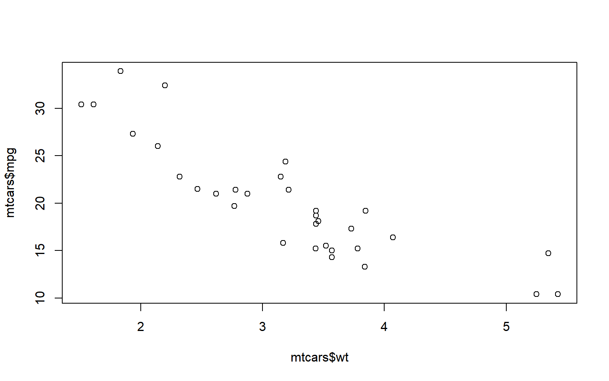
# 添加标签和标题
plot(mtcars$wt, mtcars$mpg,
main = "汽车重量与油耗的关系",
xlab = "重量 (1000 lbs)",
ylab = "油耗 (MPG)",
pch = 19, # 实心圆点
col = "#4f46e5", # 点颜色
cex = 1.2
) # 点大小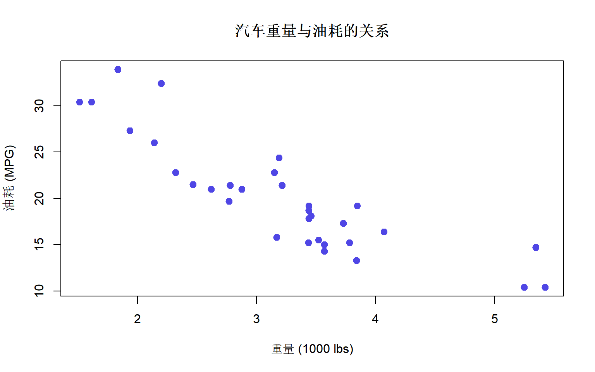
# 公式接口
plot(mpg ~ wt,
data = mtcars,
main = "使用公式接口",
pch = 16,
col = "steelblue"
)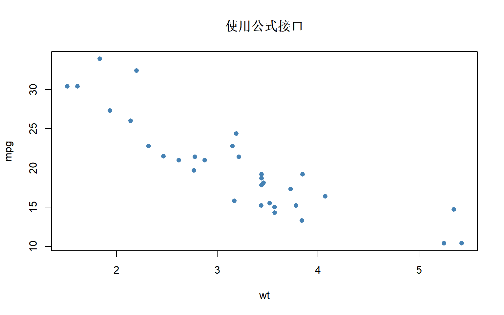
# 时间序列数据
x <- 1:20
y <- cumsum(rnorm(20))
# 折线图
plot(x, y,
type = "l", # "l" 表示线
main = "折线图示例",
xlab = "时间",
ylab = "累积值",
col = "#ef4444",
lwd = 2
) # 线宽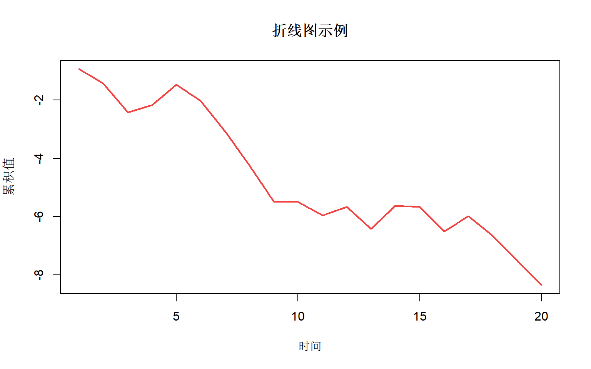
# type参数的不同取值
par(mfrow = c(2, 3))
types <- c("p", "l", "b", "o", "h", "s")
titles <- c("p:点", "l:线", "b:点+线", "o:覆盖", "h:直方", "s:阶梯")
for (i in 1:6) {
plot(1:10, sample(10),
type = types[i],
main = titles[i], col = "#4f46e5", lwd = 2, pch = 19
)
}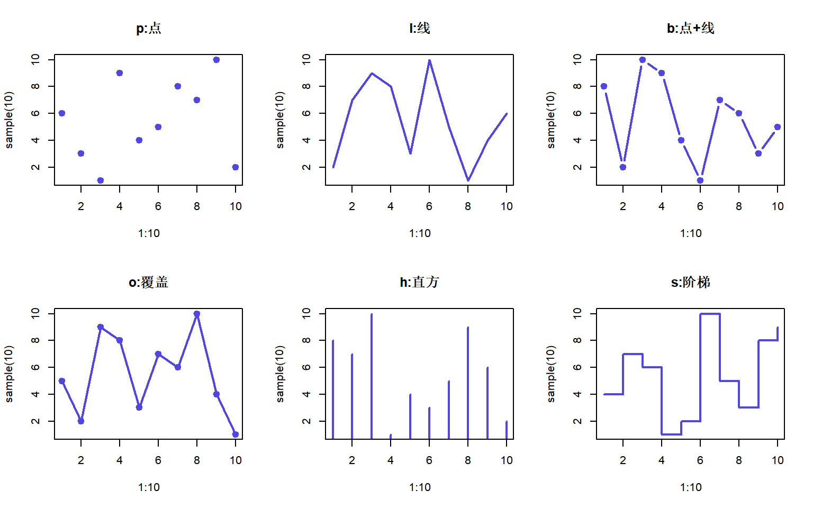
par(mfrow = c(1, 1))# 简单柱状图
counts <- table(mtcars$cyl)
barplot(counts,
main = "不同气缸数的汽车数量",
xlab = "气缸数",
ylab = "数量",
col = c("#4f46e5", "#10b981", "#ef4444")
)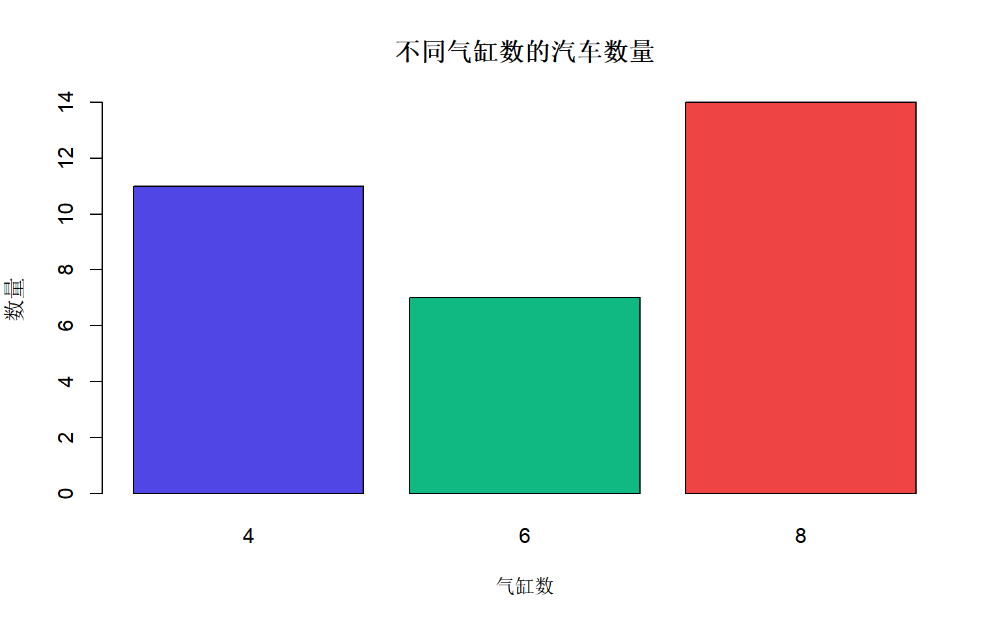
# 水平柱状图
barplot(counts,
main = "水平柱状图",
horiz = TRUE,
col = "#4f46e5",
las = 1
) # 标签方向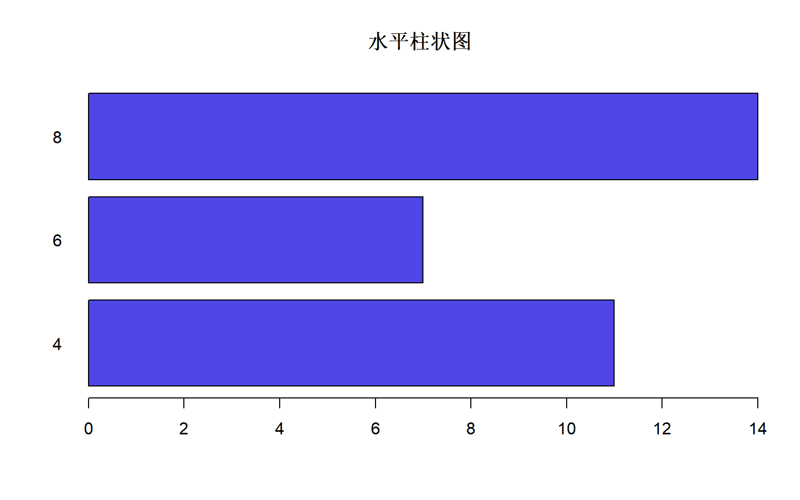
# 分组柱状图
counts_matrix <- matrix(c(4, 6, 3, 8, 10, 7), nrow = 2)
rownames(counts_matrix) <- c("男", "女")
colnames(counts_matrix) <- c("A", "B", "C")
barplot(counts_matrix,
beside = TRUE, # 并排排列
main = "分组柱状图",
col = c("#4f46e5", "#ec4899"),
legend = rownames(counts_matrix)
)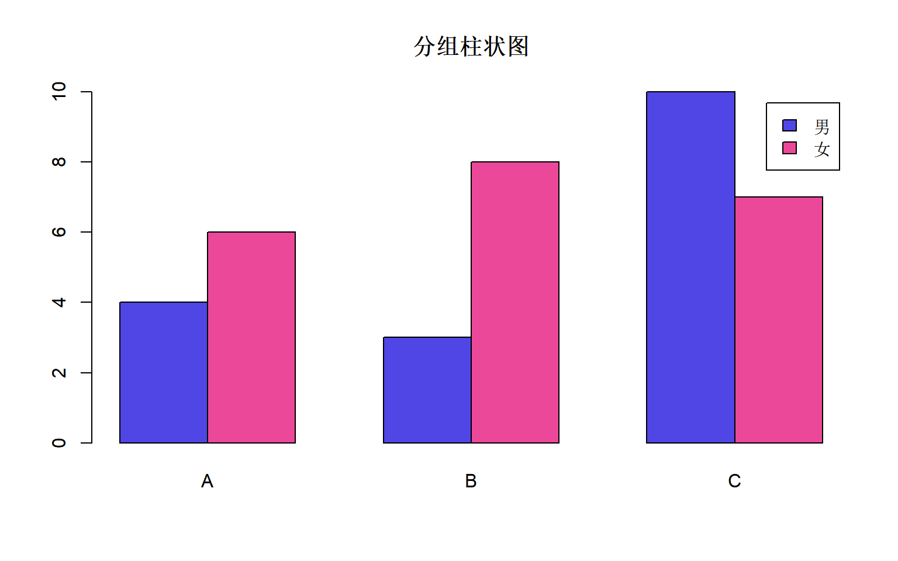
# 基础直方图
hist(mtcars$mpg,
main = "MPG 分布直方图",
xlab = "油耗 (MPG)",
ylab = "频数",
col = "#4f46e5",
border = "white"
)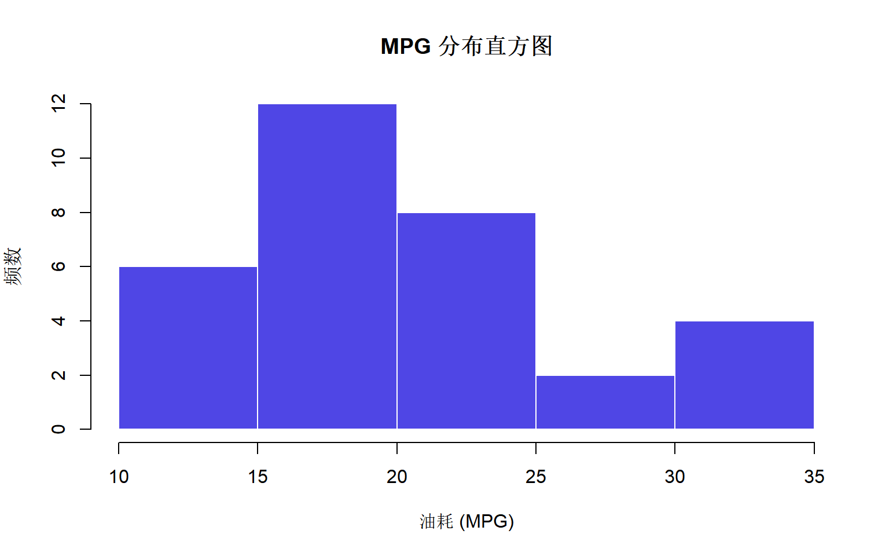
# 控制分组数量和密度曲线
hist(mtcars$mpg,
breaks = 15, # 分组数量
freq = FALSE, # 显示密度而非频数
main = "带密度曲线的直方图",
xlab = "油耗 (MPG)",
col = "#4f46e580"
) # 半透明
# 添加密度曲线
lines(density(mtcars$mpg), col = "#ef4444", lwd = 2)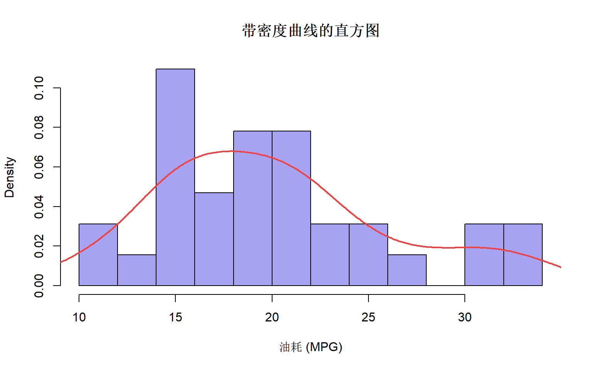
# 单变量箱线图
boxplot(mtcars$mpg,
main = "MPG 箱线图",
ylab = "油耗 (MPG)",
col = "#4f46e5"
)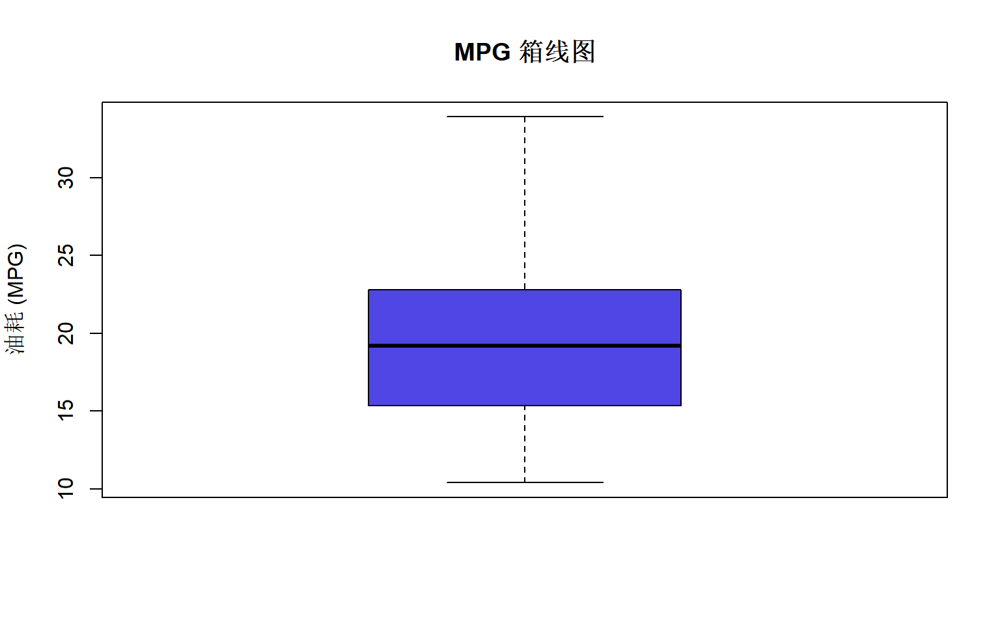
# 分组箱线图
boxplot(mpg ~ cyl,
data = mtcars,
main = "不同气缸数的油耗分布",
xlab = "气缸数",
ylab = "油耗 (MPG)",
col = c("#4f46e5", "#10b981", "#ef4444"),
notch = TRUE
) # 显示凹口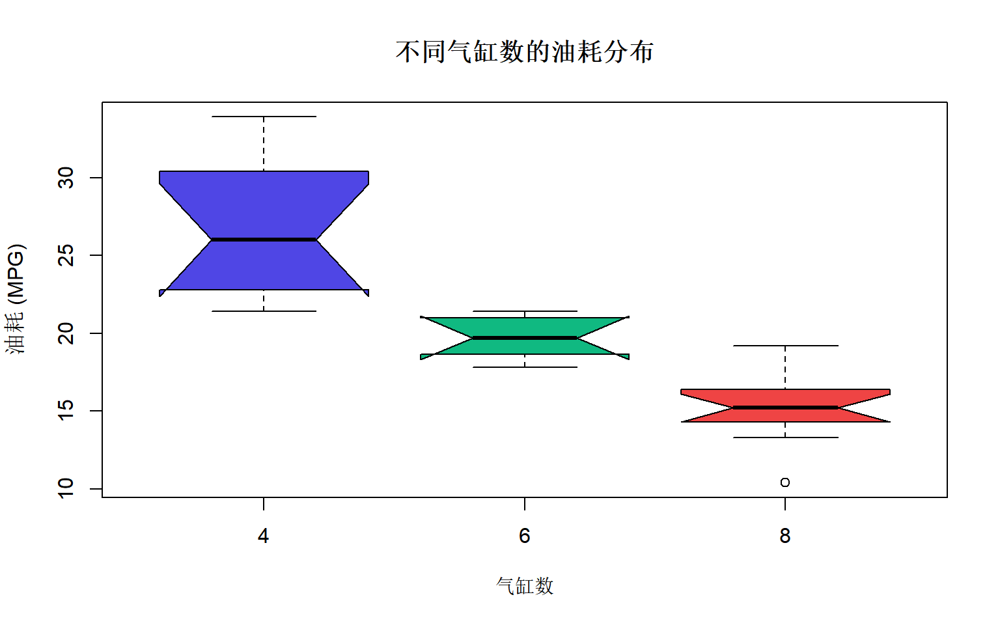
# 水平箱线图
boxplot(mpg ~ cyl,
data = mtcars,
horizontal = TRUE,
main = "水平箱线图",
xlab = "油耗 (MPG)",
ylab = "气缸数",
col = "#4f46e5",
las = 1
)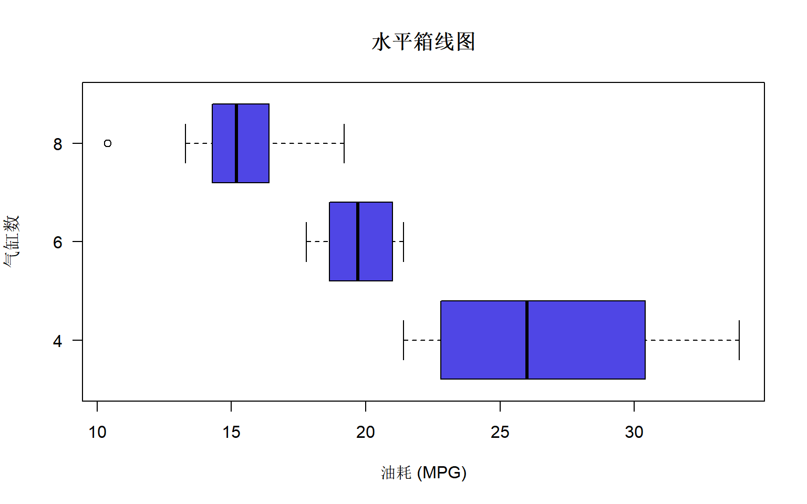
# 基础饼图
slices <- c(30, 25, 20, 15, 10)
labels <- c("类别A", "类别B", "类别C", "类别D", "类别E")
pie(slices,
labels = labels,
main = "饼图示例",
col = c("#4f46e5", "#10b981", "#ef4444", "#f59e0b", "#8b5cf6")
)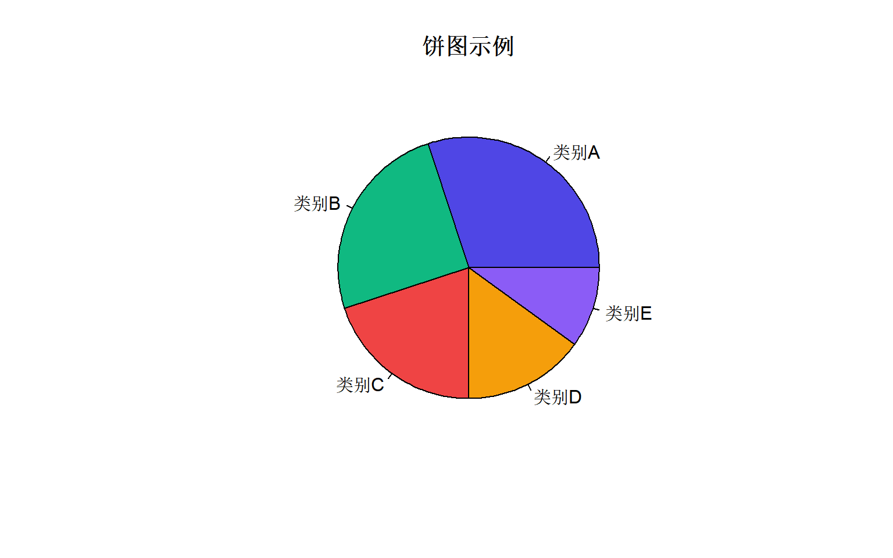
# 带百分比的饼图
pct <- round(slices / sum(slices) * 100, 1)
labels_pct <- paste(labels, "\n", pct, "%", sep = "")
pie(slices,
labels = labels_pct,
main = "带百分比的饼图",
col = rainbow(5)
)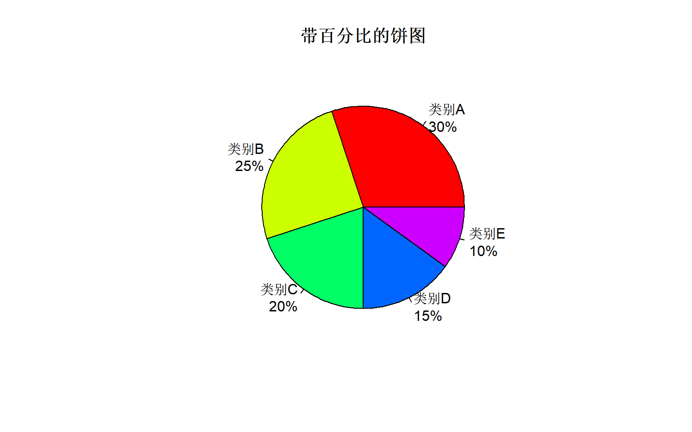
par() 函数用于设置全局图形参数，控制图形的各个方面。
# 查看当前边距设置
par("mar") # 下、左、上、右[1] 5.1 4.1 4.1 2.1par("oma") # 外边距[1] 0 0 0 0# 设置边距
par(mar = c(5, 4, 4, 2) + 0.1) # 默认值
plot(1:10, main = "默认边距")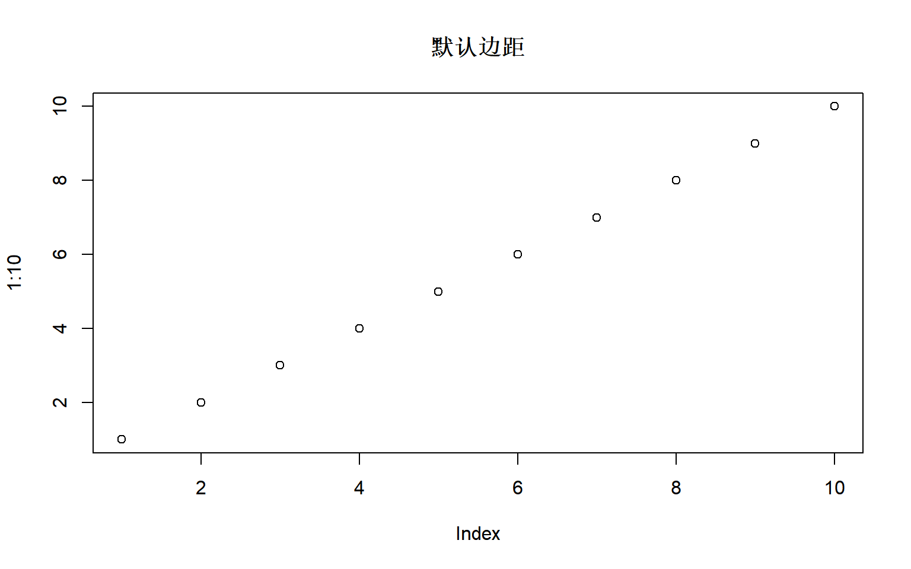
# 紧凑边距
old_par <- par(mar = c(3, 3, 2, 1))
plot(1:10, main = "紧凑边距")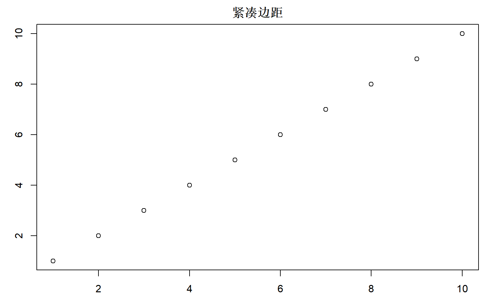
par(old_par) # 恢复默认# 常用颜色参数
plot(mtcars$wt, mtcars$mpg,
pch = 19,
col = "#4f46e5", # 点颜色
bg = "#10b981", # 填充颜色(当pch=21-25时)
main = "颜色参数示例"
)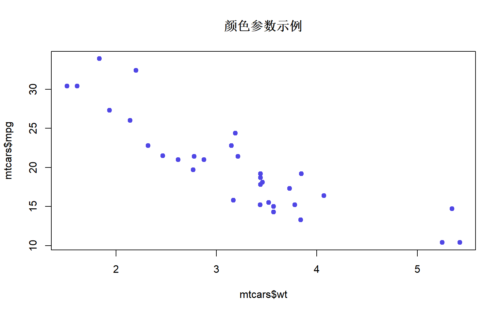
# 根据分组着色
colors <- c("#4f46e5", "#10b981", "#ef4444")[as.factor(mtcars$cyl)]
plot(mtcars$wt, mtcars$mpg,
pch = 19,
col = colors,
main = "按气缸数着色"
)
legend("topright",
legend = c("4缸", "6缸", "8缸"),
col = c("#4f46e5", "#10b981", "#ef4444"),
pch = 19
)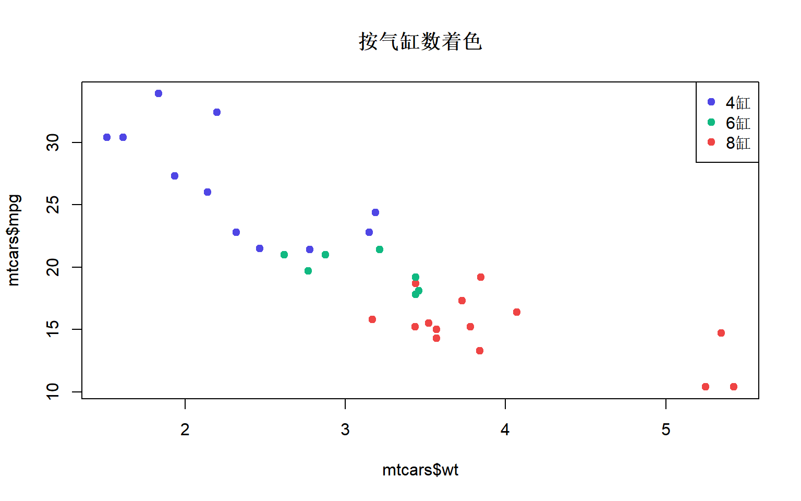
# 展示所有点形状
plot(1:25, rep(1, 25),
pch = 1:25,
cex = 2,
ylim = c(0.5, 1.5),
main = "pch 点形状一览",
xlab = "pch 值",
yaxt = "n", ylab = ""
)
text(1:25, rep(0.7, 25), labels = 1:25, cex = 0.8)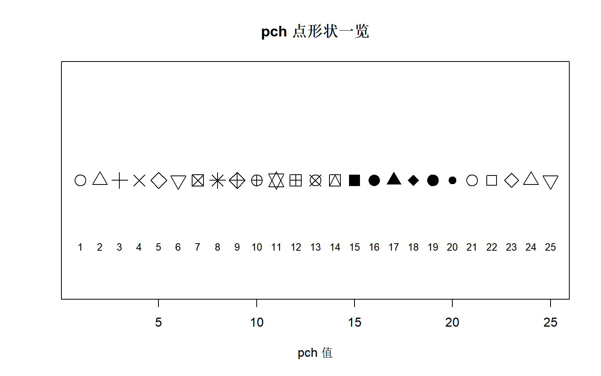
# 展示所有线型
plot(1,
type = "n", xlim = c(0, 10), ylim = c(0, 7),
main = "lty 线型一览",
xlab = "", ylab = "", xaxt = "n", yaxt = "n"
)
line_types <- c("blank", "solid", "dashed", "dotted", "dotdash", "longdash", "twodash")
for (i in 1:6) {
lines(c(1, 9), c(7 - i, 7 - i), lty = i, lwd = 2)
text(0.5, 7 - i, labels = paste(i, ":", line_types[i + 1]), adj = 0, cex = 0.9)
}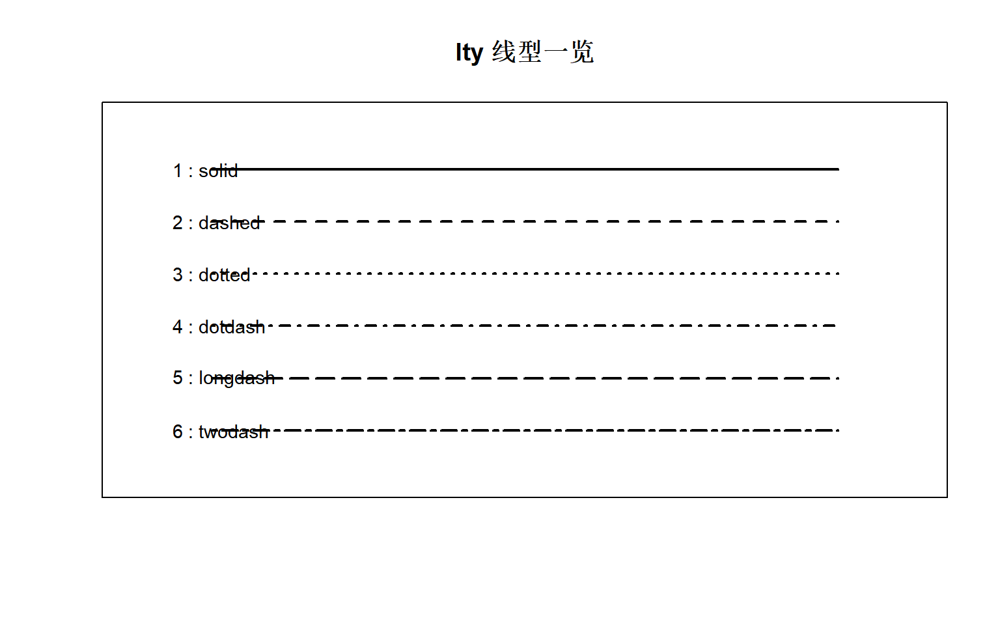
# 字体大小和样式
plot(1:10,
main = "字体参数示例",
cex.main = 1.5, # 标题大小
cex.lab = 1.2, # 轴标签大小
cex.axis = 0.9, # 刻度标签大小
font.main = 2, # 标题粗体
col.main = "#4f46e5"
)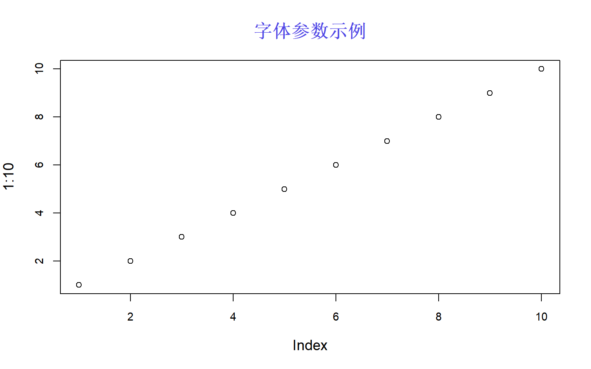
# 2行2列布局 (按行填充)
par(mfrow = c(2, 2))
plot(1:10, main = "图1")
plot(rnorm(100), main = "图2")
hist(rnorm(100), main = "图3")
boxplot(rnorm(100), main = "图4")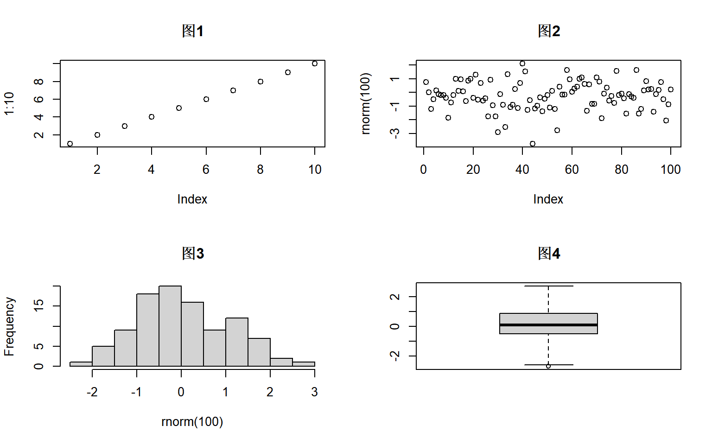
par(mfrow = c(1, 1))# 自定义布局矩阵
layout_matrix <- matrix(c(1, 1, 2, 3), nrow = 2, byrow = TRUE)
layout(layout_matrix)
# 第一个图占据顶部整行
plot(mtcars$wt, mtcars$mpg, main = "散点图 (跨两列)", pch = 19, col = "#4f46e5")
# 下面两个图各占一半
hist(mtcars$mpg, main = "直方图", col = "#10b981")
boxplot(mtcars$mpg, main = "箱线图", col = "#ef4444")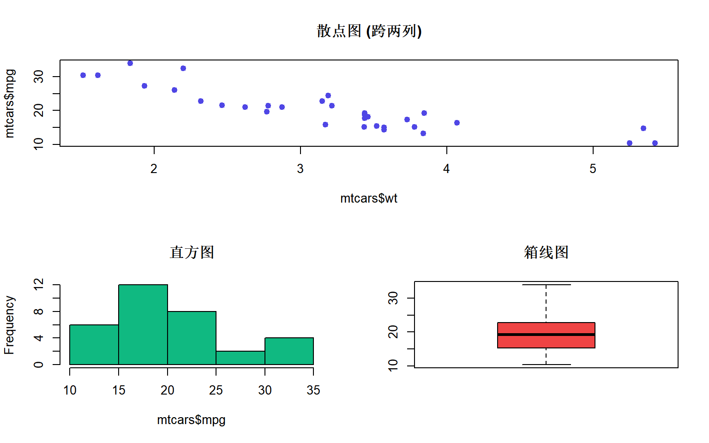
par(mfrow = c(1, 1))# 不等宽布局
layout_matrix <- matrix(c(1, 2, 2), nrow = 1)
layout(layout_matrix, widths = c(1, 2))
boxplot(mtcars$mpg, main = "窄图", col = "#4f46e5")
plot(mtcars$wt, mtcars$mpg, main = "宽图", pch = 19, col = "#10b981")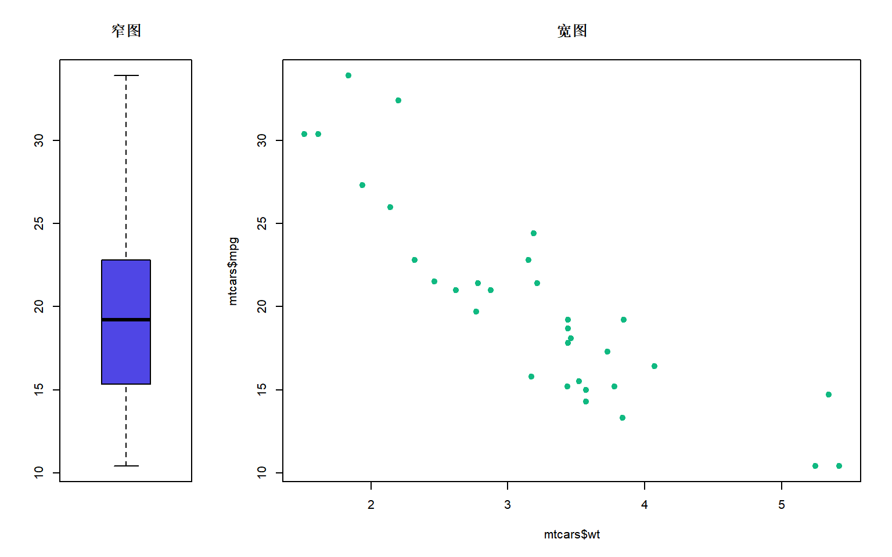
par(mfrow = c(1, 1))Base R 采用”画家模型”—先画的在下层，后画的覆盖在上层。
# 基础图
plot(mtcars$wt, mtcars$mpg,
pch = 1,
col = "gray50",
main = "叠加不同样式的点"
)
# 突出显示高油耗车辆
high_mpg <- mtcars$mpg > 25
points(mtcars$wt[high_mpg], mtcars$mpg[high_mpg],
pch = 19,
col = "#ef4444",
cex = 1.5
)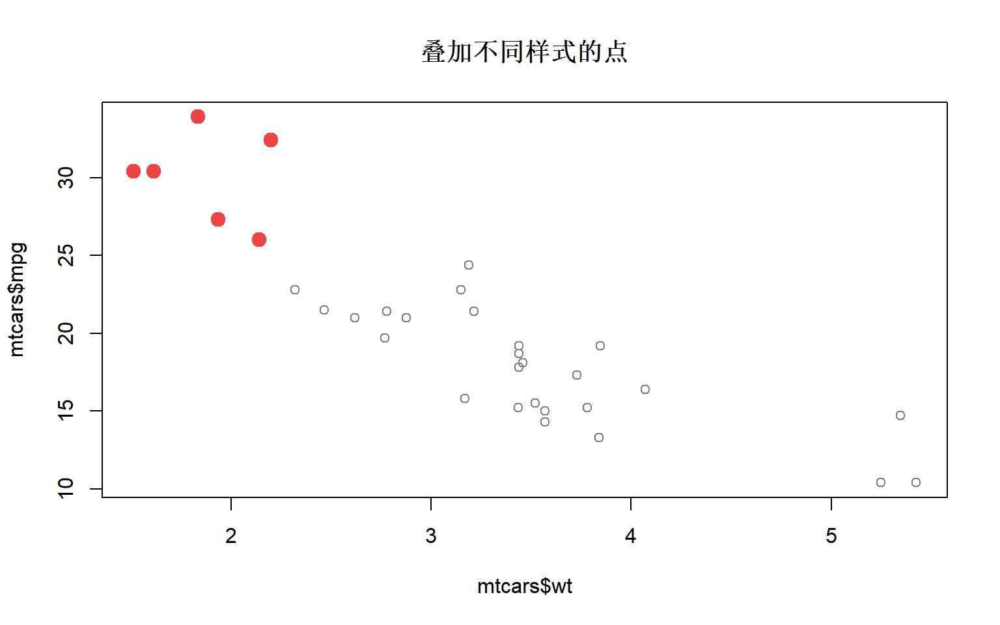
# 散点图
plot(mtcars$wt, mtcars$mpg,
pch = 19,
col = "#4f46e5",
main = "添加回归线和参考线"
)
# 添加回归线
model <- lm(mpg ~ wt, data = mtcars)
abline(model, col = "#ef4444", lwd = 2)
# 添加均值参考线
abline(h = mean(mtcars$mpg), col = "#10b981", lty = 2)
abline(v = mean(mtcars$wt), col = "#f59e0b", lty = 2)
# 添加图例
legend("topright",
legend = c("回归线", "MPG均值", "WT均值"),
col = c("#ef4444", "#10b981", "#f59e0b"),
lty = c(1, 2, 2),
lwd = 2
)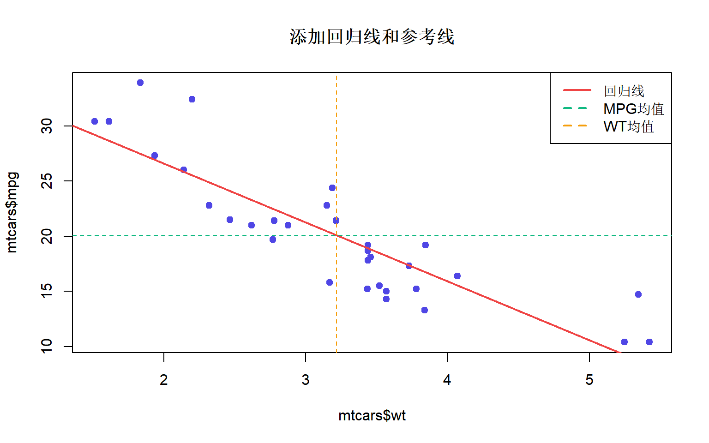
# 散点图
plot(mtcars$wt, mtcars$mpg,
pch = 19,
col = "#4f46e5",
main = "添加数据标签"
)
# 为极值点添加标签
# 最高油耗
max_idx <- which.max(mtcars$mpg)
text(mtcars$wt[max_idx], mtcars$mpg[max_idx],
labels = rownames(mtcars)[max_idx],
pos = 4, # 标签位置: 1下 2左 3上 4右
cex = 0.8
)
# 最低油耗
min_idx <- which.min(mtcars$mpg)
text(mtcars$wt[min_idx], mtcars$mpg[min_idx],
labels = rownames(mtcars)[min_idx],
pos = 2,
cex = 0.8
)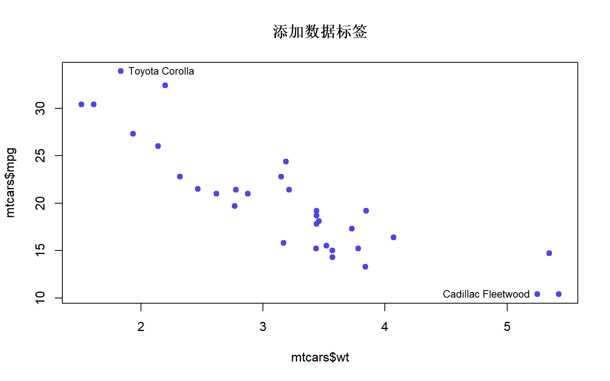
# 分组散点图
colors <- c("#4f46e5", "#10b981", "#ef4444")
shapes <- c(15, 16, 17)
cyl_factor <- as.factor(mtcars$cyl)
plot(mtcars$wt, mtcars$mpg,
pch = shapes[cyl_factor],
col = colors[cyl_factor],
main = "完整图例示例",
xlab = "重量", ylab = "油耗"
)
# 添加完整图例
legend("topright",
legend = c("4缸", "6缸", "8缸"),
col = colors,
pch = shapes,
title = "气缸数",
bg = "white", # 图例背景
box.lty = 1
) # 图例边框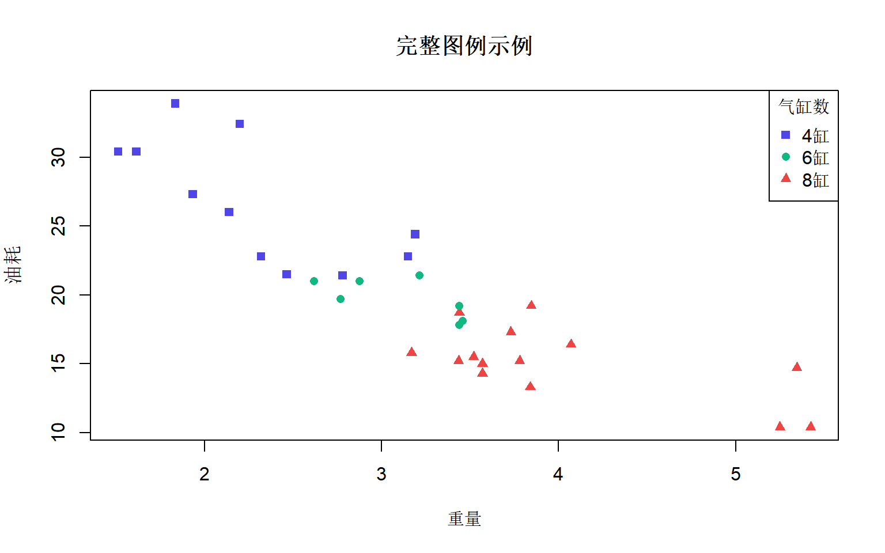
plot(1:10, 1:10, type = "n", main = "箭头和形状")
# 添加箭头
arrows(2, 2, 4, 4, col = "#4f46e5", lwd = 2)
# 添加矩形
rect(5, 1, 7, 3, col = "#10b98180", border = "#10b981")
# 添加多边形
polygon(c(8, 10, 9), c(2, 2, 4), col = "#ef444480", border = "#ef4444")
# 添加文本说明
text(3, 3.5, "箭头", cex = 0.9)
text(6, 2, "矩形", cex = 0.9)
text(9, 2.5, "三角形", cex = 0.9)
# 完全自定义坐标轴
plot(mtcars$wt, mtcars$mpg,
pch = 19,
col = "#4f46e5",
main = "自定义坐标轴",
xaxt = "n", # 不画x轴
yaxt = "n"
) # 不画y轴
# 自定义x轴
axis(1, # 1=下, 2=左, 3=上, 4=右
at = c(2, 3, 4, 5),
labels = c("轻", "中等", "较重", "重"),
col.axis = "#4f46e5"
)
# 自定义y轴
axis(2,
at = seq(10, 35, by = 5),
las = 1
) # 标签水平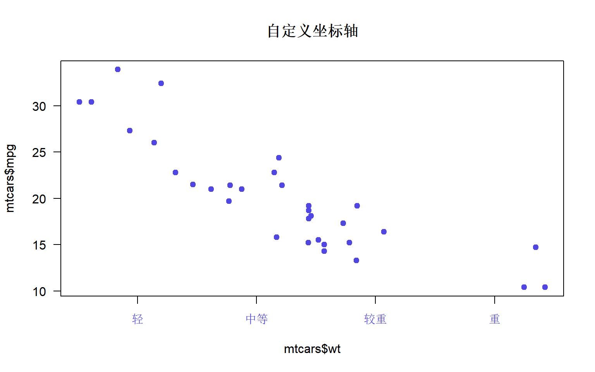
# 对数坐标
x <- 1:100
y <- x^2
par(mfrow = c(1, 2))
# 普通坐标
plot(x, y, main = "普通坐标", pch = 19, cex = 0.5, col = "#4f46e5")
# 对数坐标
plot(x, y,
main = "对数坐标", pch = 19, cex = 0.5, col = "#10b981",
log = "xy"
) # 双对数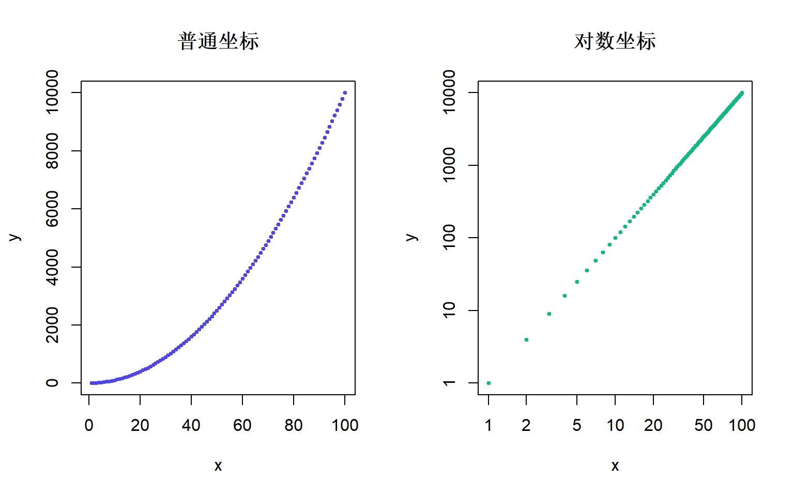
par(mfrow = c(1, 1))# 设置布局
layout(matrix(c(2, 0, 1, 3), nrow = 2, byrow = TRUE),
widths = c(4, 1),
heights = c(1, 4)
)
# 主散点图
par(mar = c(4, 4, 1, 1))
plot(mtcars$wt, mtcars$mpg,
pch = 19, col = "#4f46e5",
xlab = "重量", ylab = "油耗"
)
# 顶部直方图(x边缘分布)
par(mar = c(0, 4, 2, 1))
hist(mtcars$wt, main = "", xaxt = "n", col = "#4f46e580")
# 右侧直方图(y边缘分布)
par(mar = c(4, 0, 1, 2))
barplot(hist(mtcars$mpg, plot = FALSE)$counts,
horiz = TRUE, col = "#4f46e580", xlab = ""
)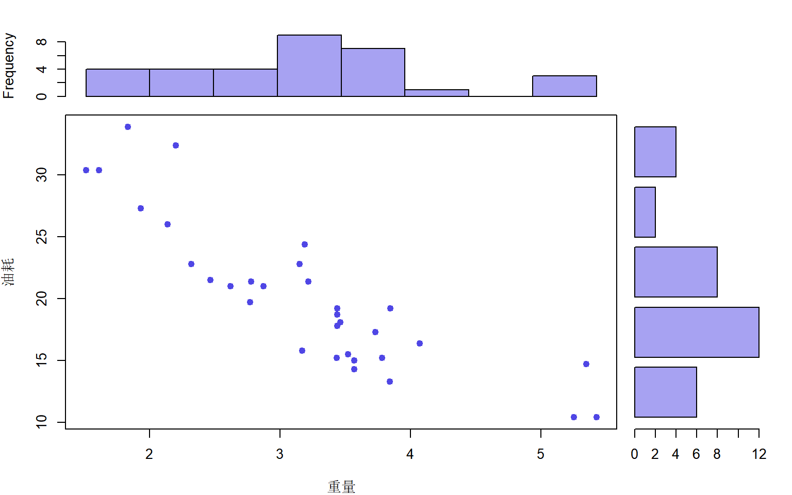
par(mfrow = c(1, 1), mar = c(5, 4, 4, 2) + 0.1)# pairs() 矩阵散点图
pairs(mtcars[, c("mpg", "hp", "wt", "qsec")],
pch = 19,
col = "#4f46e5",
main = "多变量散点图矩阵"
)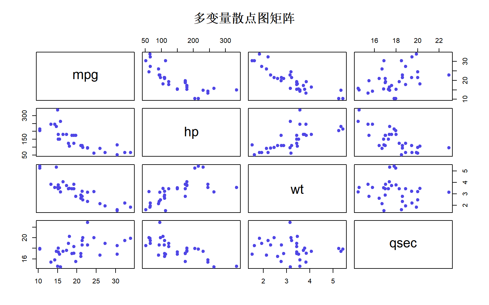
# 自定义对角线
panel.hist <- function(x, ...) {
usr <- par("usr")
par(usr = c(usr[1:2], 0, 1.5))
h <- hist(x, plot = FALSE)
breaks <- h$breaks
nB <- length(breaks)
y <- h$counts / max(h$counts)
rect(breaks[-nB], 0, breaks[-1], y, col = "#4f46e580")
}
pairs(mtcars[, c("mpg", "hp", "wt")],
pch = 19,
col = "#4f46e5",
diag.panel = panel.hist,
main = "带直方图的矩阵散点图"
)
# PNG格式 (适合网页、文档)
png("my_plot.png", width = 800, height = 600, res = 100)
plot(mtcars$wt, mtcars$mpg, pch = 19, col = "#4f46e5")
dev.off()
# PDF格式 (矢量图，适合论文)
pdf("my_plot.pdf", width = 8, height = 6)
plot(mtcars$wt, mtcars$mpg, pch = 19, col = "#4f46e5")
dev.off()
# SVG格式 (矢量图，适合网页)
svg("my_plot.svg", width = 8, height = 6)
plot(mtcars$wt, mtcars$mpg, pch = 19, col = "#4f46e5")
dev.off()
# TIFF格式 (高分辨率，适合出版)
tiff("my_plot.tiff", width = 3000, height = 2400, res = 300)
plot(mtcars$wt, mtcars$mpg, pch = 19, col = "#4f46e5")
dev.off()| 用途 | 格式 | 分辨率 |
|---|---|---|
| 网页展示 | PNG | 72-100 dpi |
| Word文档 | PNG | 150-200 dpi |
| 期刊论文 | TIFF/PDF | 300+ dpi |
| 海报 | PDF/SVG | 矢量格式 |
# ===== 基础图形 =====
plot(x, y) # 散点图
plot(x, y, type = "l") # 折线图
barplot(heights) # 柱状图
hist(x) # 直方图
boxplot(x) # 箱线图
pie(x) # 饼图
# ===== 常用参数 =====
main <- "标题" # 主标题
xlab <- "X轴" # X轴标签
ylab <- "Y轴" # Y轴标签
col <- "blue" # 颜色
pch <- 19 # 点形状
cex <- 1.5 # 点大小
lwd <- 2 # 线宽
lty <- 2 # 线型
# ===== 多图布局 =====
par(mfrow = c(2, 2)) # 2x2布局
layout(matrix(...)) # 自定义布局
# ===== 图层叠加 =====
points(x, y) # 添加点
lines(x, y) # 添加线
abline(h = 5) # 水平线
abline(v = 3) # 垂直线
abline(a, b) # y = a + bx
text(x, y, "label") # 添加文本
legend("topright", ...) # 图例
arrows(x0, y0, x1, y1) # 箭头
# ===== 坐标轴 =====
axis(1, at = ..., labels = ...)
xaxt <- "n" # 不画x轴
yaxt <- "n" # 不画y轴
las <- 1 # 标签水平
# ===== 保存图片 =====
png("file.png", width, height, res)
pdf("file.pdf", width, height)
dev.off()Base R 绑图学习路径：
建议：虽然 ggplot2 更现代，但 Base R 绑图仍然是快速探索数据的利器。建议两者都掌握，根据需求选择使用。
| 方面 | Base R | ggplot2 |
|---|---|---|
| 学习曲线 | 较平缓 | 需理解图层语法 |
| 灵活性 | 极高，底层控制 | 高，但有框架限制 |
| 代码量 | 复杂图较多 | 复杂图较简洁 |
| 速度 | 更快 | 稍慢 |
| 默认美观度 | 一般 | 更好 |
| 扩展性 | 手动实现 | 丰富的扩展包 |